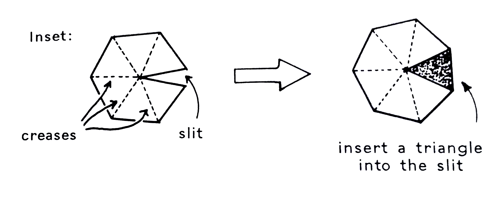

The History of Scalable Hierarchy Browsing in Hyperbolic Space
Michael Glatzhofer 2018
Content
A brief history of hyperbolic geometry
Early hyperbolic browsing systems
Available UI components and modules 2018
Euclid's Axioms 300 BC
Any two points lie on a unique line.
Any straight line can be continued indefinitely in either direction.
You can draw a circle of any centre and any radius.
All right angles are equal.
If a straight line, crossing another two straight lines L, L',
makes angles α, β with L, L' on one side,
and if α + β < π, then L, L' if extended sufficiently far meet on that
same side.
Playfair's Axiom 1795
Any two points lie on a unique line.
Any straight line can be continued indefinitely in either direction.
You can draw a circle of any centre and any radius.
All right angles are equal.
If a straight line, crossing another two straight lines L, L',
makes angles α, β with L, L' on one side,
and if α + β < π, then L, L' if extended sufficiently far meet on that
same side.
In a plane, through a point not on a given straight line,
at most one line can be drawn that never meets the given line.
Nikolai Lobachevsky 1823 (Janos Bolyai 1823 too)
Any two points lie on a unique line.
Any straight line can be continued indefinitely in either direction.
You can draw a circle of any centre and any radius.
All right angles are equal.
In a plane, through a point not on a given straight line, at most one line can be drawn that never meets the given line.
For any given line R and point P not on R, in the plane containing both line R and point P there are at least two distinct lines through P that do not intersect R.
Curved Space
Spherical
Euclidean
Hyperbolic
Tiling:
Model:
surface of sphere
euclidean plane
ùîª or ‚Ñç
Lines:
arcs of great circles
euclidean lines
arcs orthogonal to boundary
Parallel lines:
through P ∊ L there is no line not meeting L
through any P ∊ L there is a unique line not meeting L
through P ∊ L there are infinitely many lines not meeting L
Curvature:
>0
0
<0
Angle sum of triangle:
>π
π
<π
Circumference of circle:
2π sin r
2πr
2π sinh r
Area of circle:
4π sin² r/2
πr²
4π sinh² r/2
Negative Curved Plane Construction

Only Parts of ℍ² fit into ℝ³
A Theorem of Hilbert states that it is not possible to place a full hyperbolc plane in ℝ3.